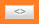

5. Creación de una Vista¶
Acceso directo desde:
Posicionarse sobre el botón → Vistas
Seleccione la opción → Nueva

Otra opción para poder acceder es:
Ingrese a la sección → Vistas

Presione el botón → Nueva vista
Seleccione el Conjunto de Datos del cual desea crear una vista →
El sistema visualiza las tablas de los datos para la creación de la Vista. En un mismo Conjunto de Datos pueden existir una o más tablas en una misma hoja, los que se muestran una bajo la otra, haga click sobre una tabla de datos y presione el botón Continuar.
Luego precise qué datos serán incluidos en la creación de la Vista.
Puede seleccionar todas las filas y columnas presionando  o si lo desea solo algunas filas y columnas haciendo clic sobre ellas.
Una vez seleccionados los datos tiene la opción de habilitar el Modo Avanzado, para ello haga click en el botón “Habilitar Modo Avanzado”:
- Fijar Cabeceras:, Haga click en Selecciona Cabeceras de la tabla, elija la fila que quiera fijar como cabecera y luego haga click en Listo abajo de las opciones avanzadas.
- Agregar un filtro: Seleccione un valor para la búsqueda ó ingrese los parámetros necesarios, luego haga click en Listo.
- Agregar Aliases: Esta funcionalidad es de interés exclusivamente para los desarrolladores. Su objetivo es permitir a los usuarios dar aliases a las columnas de una Vista, con el beneficio de que esto les permita identificarlas más fácilmente a la hora de procesarlas a través de nuestra API .Seleccione la opción Alias, luego sobre cada columna aparecen cajas de texto, ingrese el nombre de Alias deseado y haga click en Listo.
Hay dos importantes opciones para los filtros:
1.- Valores:
- Es igual a: Ingrese un valor que sea exactamente lo que aparece en la columna seleccionada.
- Es mayor que & Es menor que: Ingrese valores numéricos, permite retornar valores más altos o más bajos que su consulta.
- No es igual a: Ingrese un valor que desea que se excluya de la consulta.
- Contiene: Ingrese un valor que sea similar a lo que aparece en la columna.
2.- Seleccionar:
- Parámetro: Permite tener un cuadro de texto para que ingrese consultas.
- Valor fijo: Es un parámetro específico para la consulta.
Seleccionado los datos y personalizado con el Modo Avanzado, presione el botón Continuar.
El sistema visualiza la siguiente pantalla, complete los campos requeridos (*), pudiendo omitirse los siguientes: Fuentes, Etiquetas y Notas de la Vista. Luego de completar los campos requeridos, presione el botón Continuar y luego el botón Guardar. La Vista se crea por defecto en estado Borrador.
El sistema visualiza la Vista previa antes de guardar.

También puede crear una Vista editando un Conjunto de Datos, vaya a la sección Conjuntos de datos, haga click sobre un Conjunto de Datos y presione el botón Crear Vista.
5.1 Edición de una Vista¶
Una vez creada la Vista, se visualiza la misma en un listado, este listado cuenta con una paginación al igual que el listado de Conjuntos de Datos. Para esto se dirige a la sección → Vistas
Para Editar una Vista, hay dos opciones:
Clic sobre la Vista: El sistema visualiza la información de la Vista seleccionada, presione e introduzca los cambios sobre la información de la Vista.
Acercar el mouse sobre la Vista: Se visualizan las siguientes opciones:
- Crear Visualización: Al hacer click sobre este botón puede crear una nueva Visualización tomando como referencia la Vista seleccionada.
- Editar: Al hacer click sobre este botón puede realizar cambios a la información de la Vista
- Borrar: Al hacer click sobre este botón puede borrar los cambios recientes de la Vista o todos los cambios de la Vista.
- Ver conjunto de datos: Al hacer click sobre este botón puede acceder al Conjunto de Datos asociado.
Cuando la Vista se encuentra en Revisión:
Los usuarios con el rol de Editor pueden enviar la Vista a Revisión, la Vista en este estado no puede ser editada, su opción de Editar solo es posible cuando el recurso es Aprobado o Rechazado.
Los usuarios con rol de Publicador o Administrador podrán Aceptar o Rechazar el recurso.
5.2 Publicación de una Vista¶
Para publicar una Vista, el Conjunto de Datos asociado debe estar previamente Publicado. En el caso que la Vista esté en Revisión, esta deberá ser Aceptada para luego ser Publicada, haga click sobre el botón Publicar.
Para acceder al micrositio y visualizar la Vista publicada  , haga clic sobre
, haga clic sobre  , margen superior derecho de la visualización de la Vista.
, margen superior derecho de la visualización de la Vista.

5.3 Eliminación de una Vista¶
Para eliminar una Vista, hay dos opciones:
Dentro de la Vista, clic sobre

En el listado de Vistas, seleccione una Vista y presione el botón


El sistema permite eliminar la revisión actual de la Vista o todas las revisiones de la Vista. Esta última acción elimina la Vista y todos sus recursos asociados, como así también los elimina del micrositio. Por Revisión se entiende los distintos cambios realizados sobre la información de la Vista.
Si la Vista se encuentra con estado en Revisión, no podrá ser eliminada del sistema.